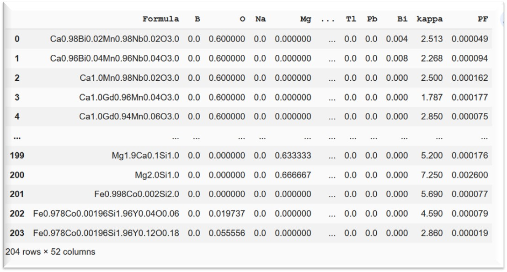

This article is an extension of my previous post “Shapley Value aided Recipe for Materials Design” which explains the usage of Shapley values for extracting feature importance and their impact on individual target variables leading to drafting a blueprint for materials design. However, to innovate and fabricate new materials, we need to consider the synergistic effect of several properties determining the performance.
For instance, Corning’s Gorilla glass, used in smartphones and tablets, possesses the right balance of properties such as hardness, lightness, and scratch-resistance. There are umpteen number of such examples showing materials with combination of properties for the specified areas of applications. Thus comes the necessity of building predictive models with multiple closely knitted targets.
Let me illustrate the above point with an artificial neural network (ANN) modeled to project the extent of the importance of two interdependent targets. Here, I am going to use the same dataset, used in my last two posts, comprising of 204 thermoelectric materials, their elemental compositions, and their two significant properties — thermal conductivity (kappa) and power factor (PF) associated with electrical conductivity. The right combination of kappa and PF determines the performance. These materials are poor thermal but good electrical conductors at the same time which is quite challenging as per the laws of physics. They find applications in power generation and refrigeration. One noteworthy application of these thermoelectric materials is its use as a power source for the Mars Rover vehicles, -‘Curiosity’, ‘Perseverance’.
The question is how we find the best one with an optimum set of properties. The answer lies in building a robust regression model that can connect all necessary parameters and identify the most significant combination of features. Here, we discuss the process to build such a model.
After preprocessing of materials data using the python libraries such as Matminer and Pymatgen, described in my post “Uncovering the Potential of Materials Data using Matminer and Pymatgen”, the refined dataset looks like this:

Clean dataset for deep learningThis clean dataset contains 49 predictors or X and 2 targets or y. The predictors are all individual elements of the material compositions. While ‘kappa’ and ‘PF’ are the two targets (y).
X = ds_RT.iloc[:, 1: 50]
y = ds_RT.iloc[:,50:]
Let us now go ahead and split the data into training and test sets.
from sklearn.model_selection import train_test_split
X_train, X_test, y_train, y_test = train_test_split(X, y, test_size = 0.2, random_state = 0)Generally, descriptors or predictors (X’s) are scaled due to their broad ranges of values. However, in this case, all the predictors are elements of the periodic table, and their data represents elemental fractions from 0 to 1.
On the contrary, the scaling of y, applying MinMaxScaler function of Sklearn, is needed as the range of these target variables spreads widely.
from sklearn.preprocessing import MinMaxScaler
sc = MinMaxScaler()
y_train = sc.fit_transform(y_train)
y_test = sc.transform(y_test
It’s time to build the ANN layers.
I have arranged three dense or the fully connected layers with the first one having the input dimension of 49 representing the number of predictors and the last layer with 2 output neurons for 2 targets. The code snippet below displays the layers and their attributes.
from keras.models import Sequential
from keras.layers import Dense
model = Sequential()model.add(Dense(25, input_dim=49, kernel_initializer='he_uniform', activation='relu'))model.add(Dense(25, kernel_initializer='he_uniform', activation='relu'))model.add(Dense(2))
The adaptive moment estimation algorithm, ADAM, based on stochastic gradient descent is employed for optimization of the model and the loss function is estimated by mean absolute error. After compilation of the model, the training dataset is fitted, and the loss function is calculated accordingly.
model.compile(loss ='mae', optimizer = 'adam')
model.summary()
history = model.fit(X_train, y_train, verbose = 'auto',epochs = 400)from sklearn.metrics import mean_absolute_error
mae = mean_absolute_error
mae(y_test, y_pred)Let us dive deep into the impact of predictors on these target variables with the aid of Shapley values. This impact analysis is vital for every dataset to understand and interpret any machine learning model which is otherwise impenetrable.
With the advent of several XAI (Explainable Artificial Intelligence) algorithms, we can more accurately gauge the tuning of hyperparameters leading to more meaningful predictions.
Let us now see the role of Shapley values in this example of thermoelectric dataset. The whole idea of subjecting this data to a deep learning algorithm and calculating the contributions (in the form of Shapley values) of the predictors on the targets is to extract the useful correlations between them. These correlations matter immensely when the interrelations between parameters become more and more complex.
After installation of the SHAP (SHapley Additive exPlanations) package, the KernelExplainer function is used in this case to calculate the contributions of the features/ predictors. I am sharing the code snippet for the same.
pip install shap
import shapexplainer = shap.KernelExplainer(model = model, data = X_train,link = 'identity' )
shap_values = explainer.shap_values(X_train)class_names = y.columns
shap.summary_plot(shap_values, feature_names = X_train.columns)The two target variables, kappa and PF, are color-coded by red and blue, respectively. The Shap plot has features on the X-axis and absolute Shap values or contributions as Y-axis. We can immediately get an overview on the extent of contribution of each feature on individual target variables from this bar plot.
To untangle the correlations of kappa and PF with the features, I plotted the summary plots taking one target at a time.
 Shapley summary plots showing effect of elemental contributions on kappa and PF
Shapley summary plots showing effect of elemental contributions on kappa and PF
These plots reveal the signs of correlations: positive, negative or zero. The red color indicates high impact while ‘blue’ depicts low. Taking the same example of Zn and Sb, following can be inferred:
The class of material, in this study, requires a co-existence of positive and negative correlations of features with PF and kappa respectively. Sb, for instance, showed such an ideal combination. Prior knowledge of the direction of impact of features on targets is truly conducive in proposing design ideas for any types of materials for desired applications.
You can get the entire code here.
Finally, training machines to recycle and reuse data with multiple targets for a specific purpose should be encouraged as it brings out the essence of inter-relationships between the final outputs. This enhances the forecasting and reliability of any machine learning model leading to more fruitful deployment in real-world applications.